Coat Maintenance Tips
Learn the best daily practices for keeping your dog's coat healthy, shiny, and tangle-free...
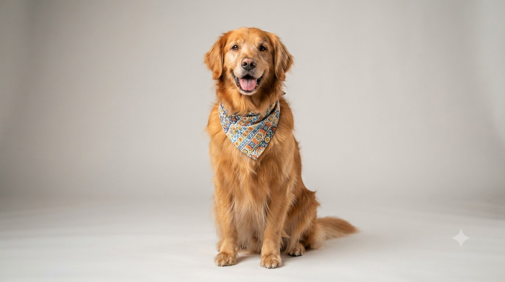
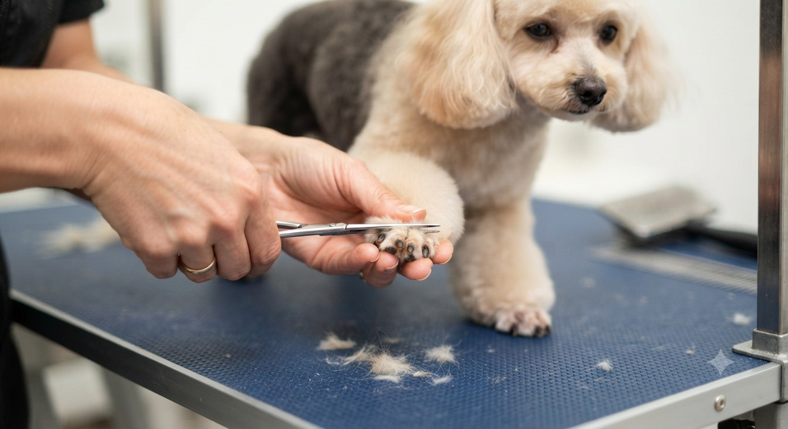
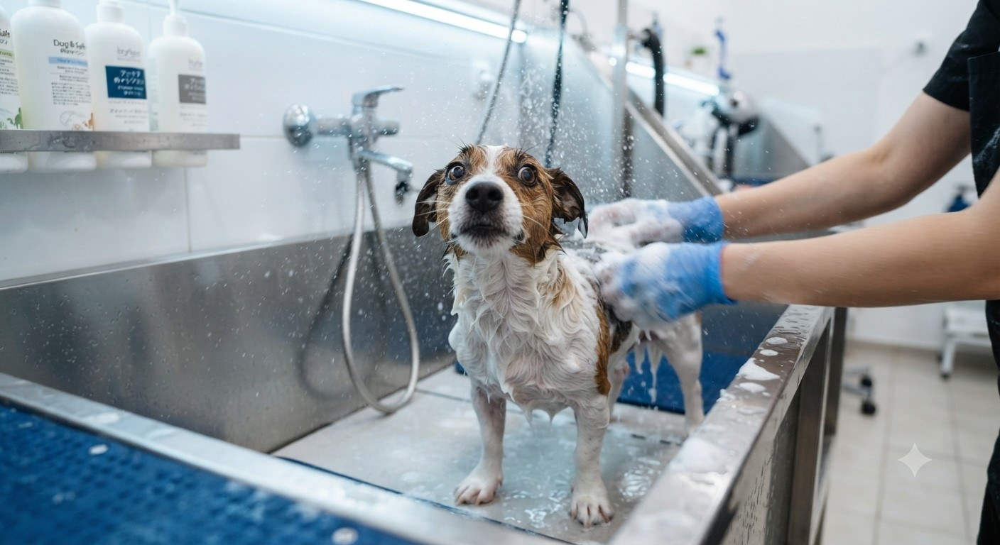
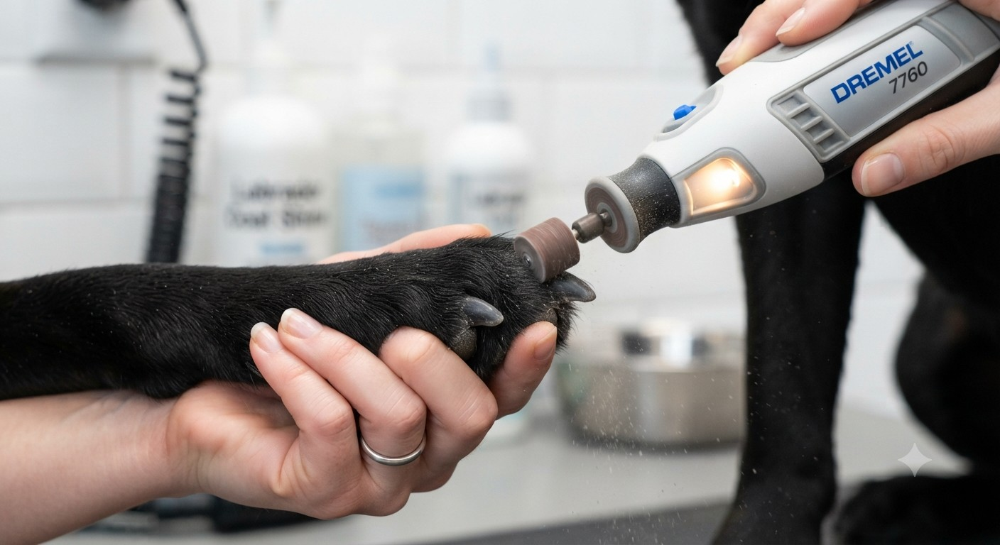
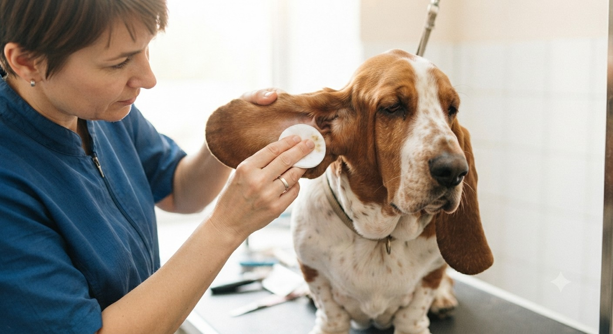
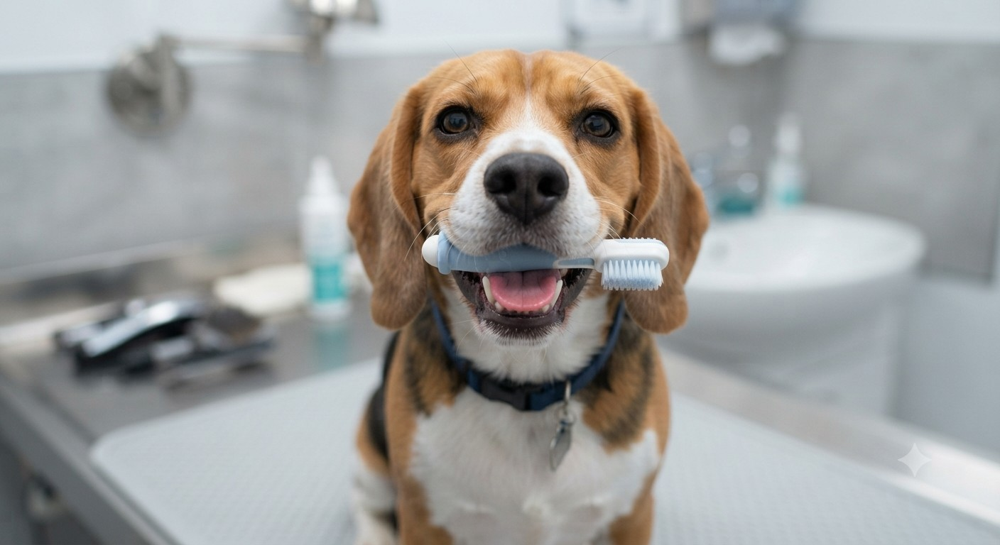
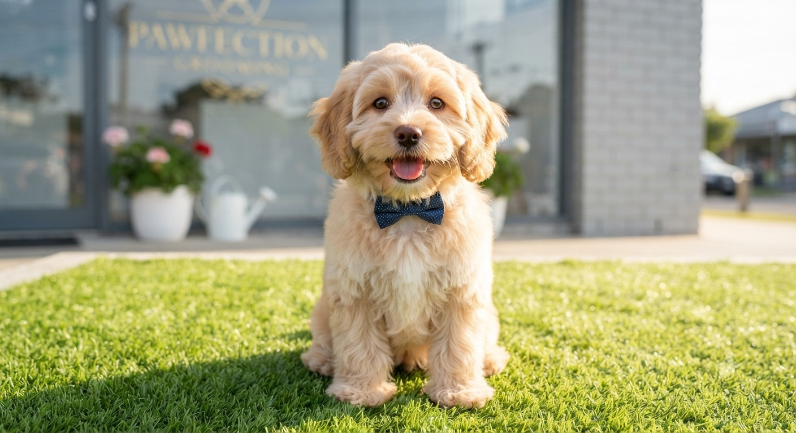
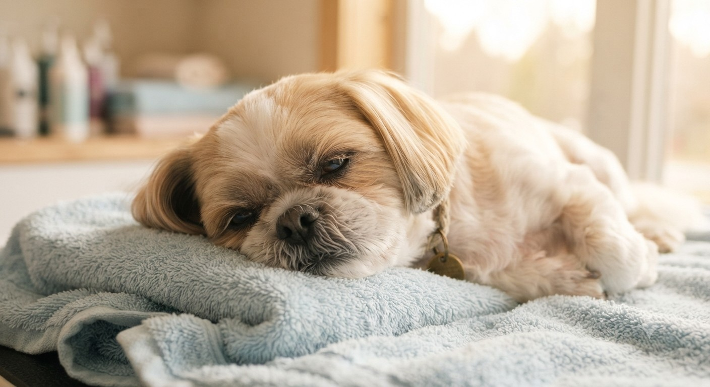
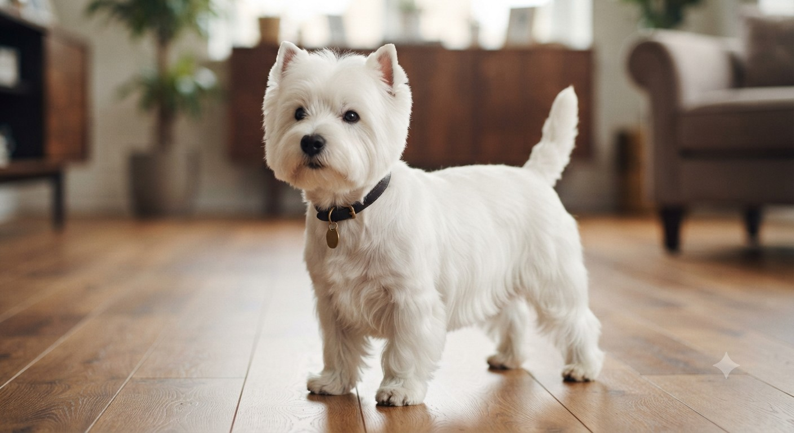
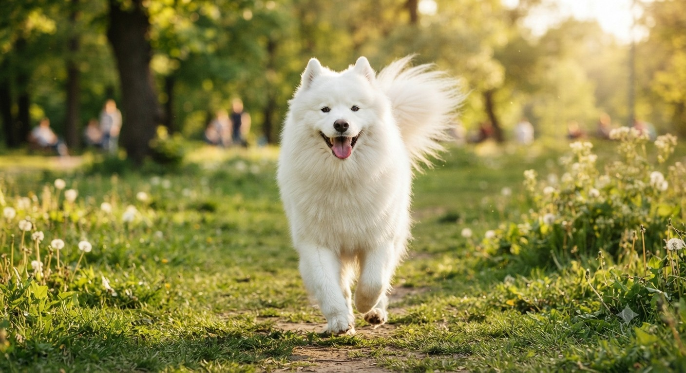
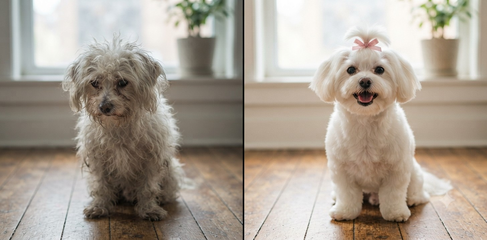
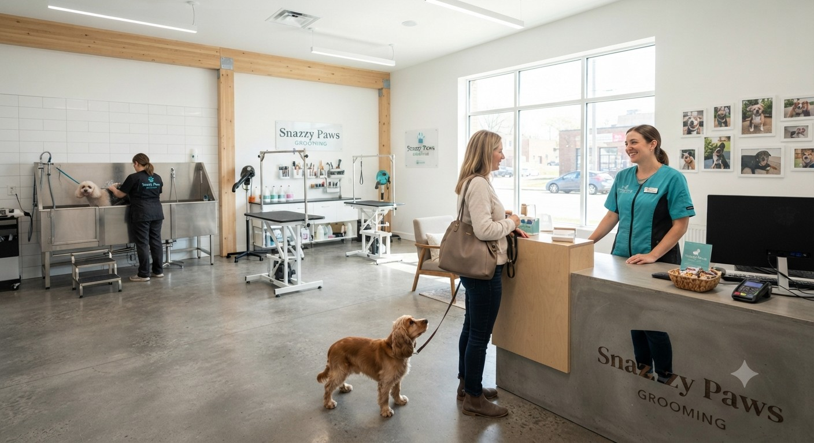
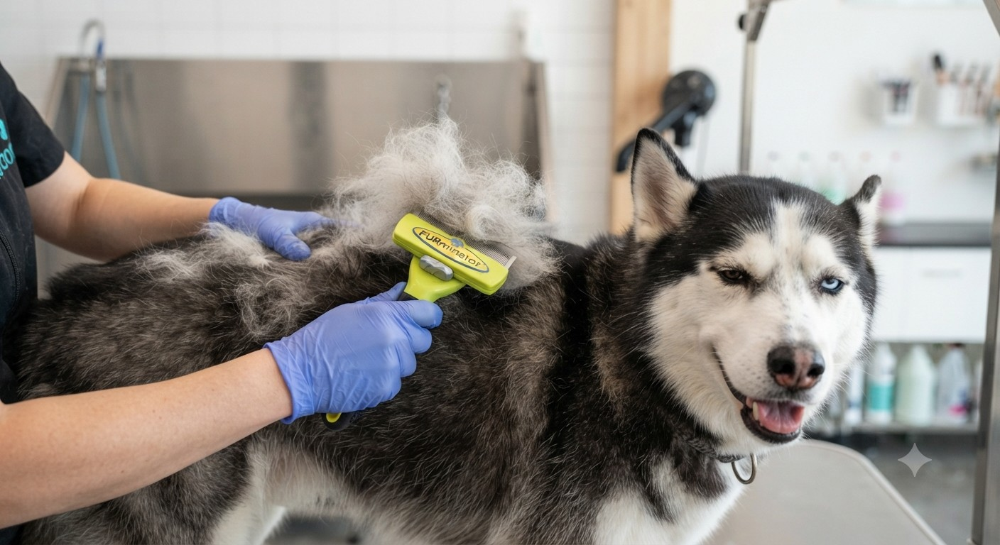
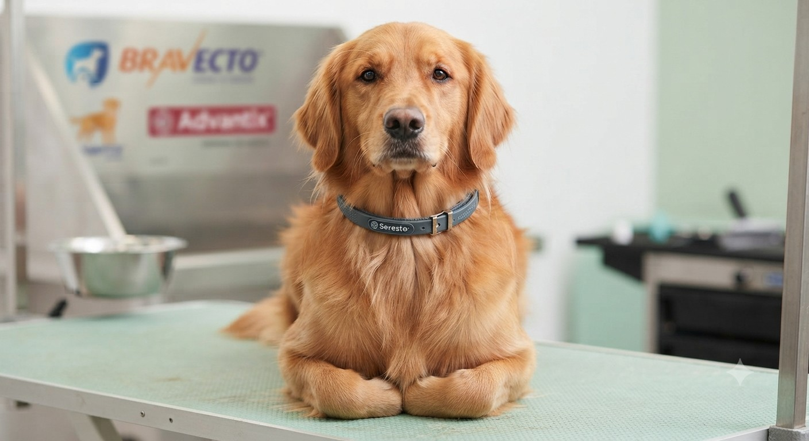
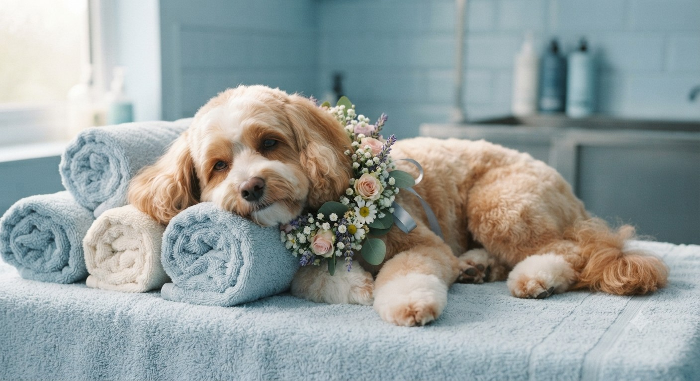
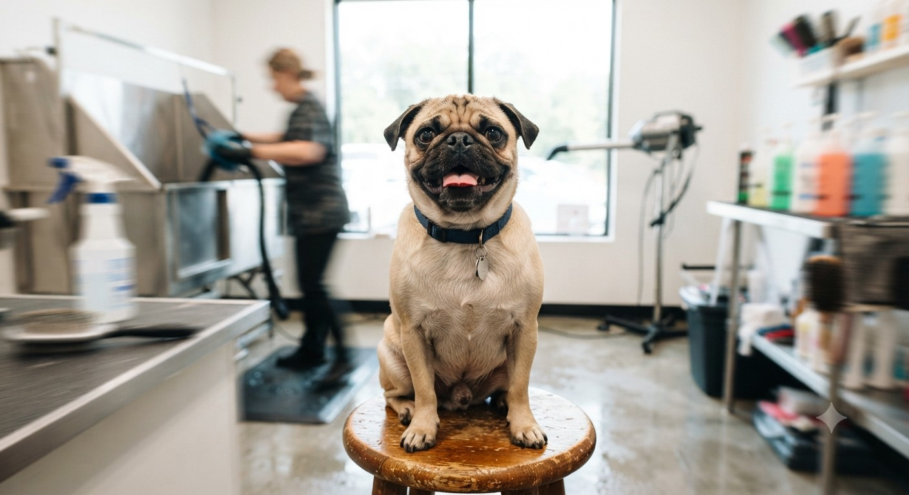
Learn the best daily practices for keeping your dog's coat healthy, shiny, and tangle-free...
Safe techniques to address mats and tangles without causing distress or pain to your pet...
How to manage heavy seasonal undercoat blowout with proper bathing and deshedding tools...
Understanding why keeping your dog's quick trimmed regularly protects their posture and mobility...